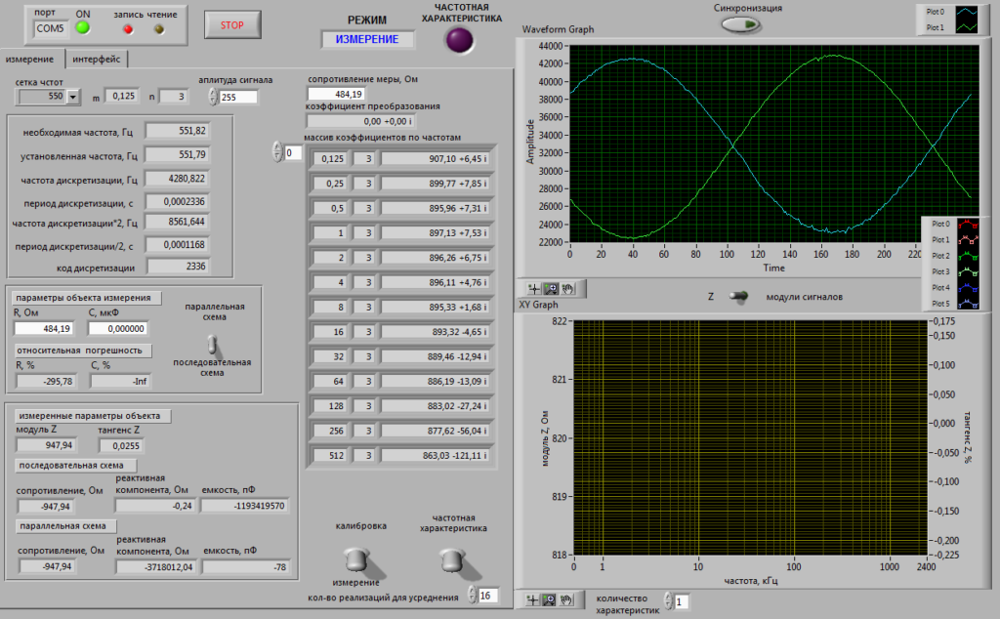
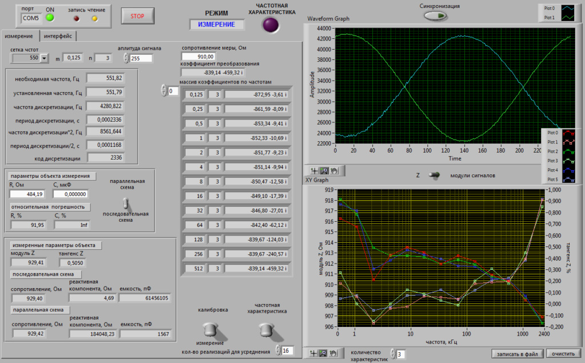

MIRIDA BIA – отечественная разработка медицинского диагностического
анализатора, которая позволит получить достоверные данные при
измерении состава тела.
Назначение
Биоимпедансный анализатор предназначен для диагностики состава тела
посредством измерения электрического сопротивления участков тела в
разных частях организма.
Применение
Биоимпедансный анализатор применяется в медицинских учреждениях,
лечебно-профилактических учреждениях и в фитнес центрах с целью
разработки правильной программы тренировки профессиональных
спортсменов,
для контроля веса и режима питания пациентов.
Что нового?
Повышена информативность данных о составе тела
Разработана схемотехническая часть измерительного аппарата,
которая позволит проводить измерения биоимпеданса в широком
диапазоне частот от 300 Гц до 2,5 МГц. Благодаря полученной
частотной характеристике станет возможной селективность измерений,
позволяющая увеличивать влияние одних тканей или органов на
измерительный сигнал и одновременно уменьшать влияние других.

Снижена погрешность измерений импеданса
Увеличена точность получения данных о составе тела за счёт
разработки источника тока, измеряющий как втекающие токи в объект,
так и вытекающие токи из объекта. Это позволит аппаратно
минимизировать влияние токов утечки внутри измерительного аппарата
на конечный результат. В результате погрешность измерений
импеданса составит не более 5%.

Как это работает?
Автоматизированная система измерения биоимпеданса в своём исполнении
имеет аппарат и измерительные электроды. Аппарат подключается к
персональному компьютеру.
Входное воздействие создается на тело пациента в виде слабого
электрического тока заданной частоты с помощью электродов.
Воспринимается реакция на воздействие в виде разности потенциалов на
определенном участке тела. Для выполнения расчетов используются
следующие данные пациента: измеренные данные (активное и
реактивное сопротивление) пол, рост, вес, возраст.
На основании измерений биоимпеданса и входных данных, определяется
совокупность физиологических параметров организма. Данные
измерений, расчетов и условий эксперимента сохраняются в базе.
Отчет может быть выведен на экран персонального компьютера,
сохранен в виде файла и распечатан. Регистрируется и
визуализируется динамика изменений показателей и формируется
предварительное медицинское заключение.
А что под капотом?
Частотный диапазон: 0,3 кГц…2500 кГц
Зондирующий ток: 1 мА
Пределы измерения: 100 и 1000 Ом
Метод оценки состава тела: многочастотный
Схема подключения: тетраполярная
Относительная погрешность измерений импеданса не более: 5%
Наша поддержка
Проект «Разработка автоматизированного цифрового портативного
биоимпедансного анализатора» разработан при поддержке ФГБУ «Фонд
содействия развитию малых форм предприятий в научно-технической сфере»
(Фонд содействия инновациям) и федерального проекта «Платформа
университетского технологического предпринимательства» в рамках
реализации грантового конкурса «Студенческий стартап (II очередь)».